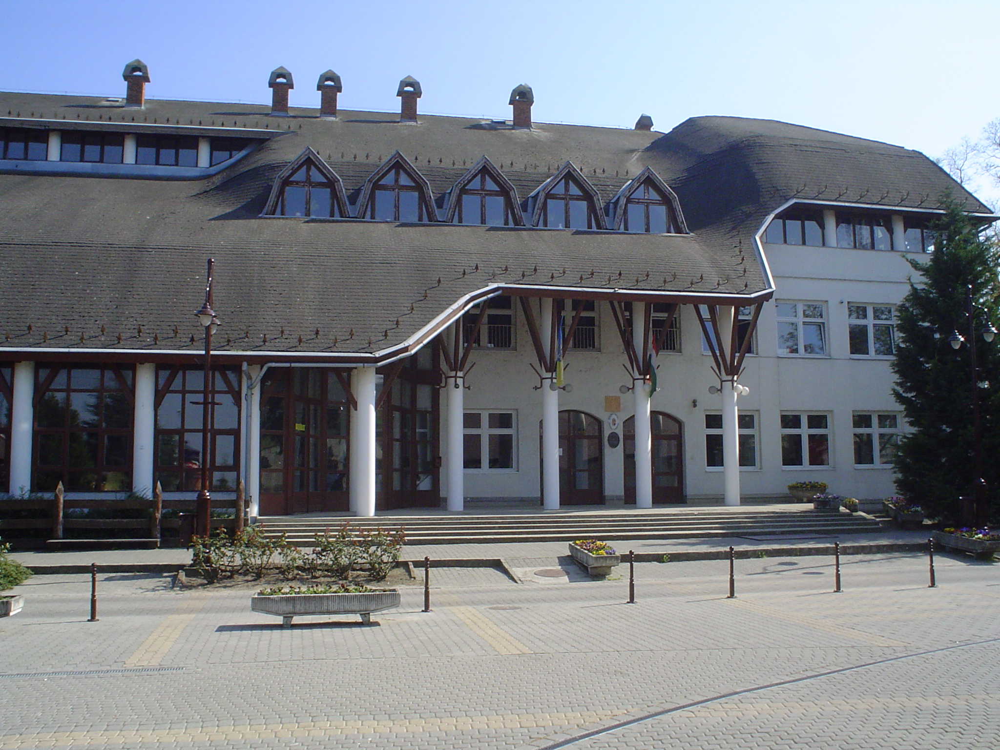
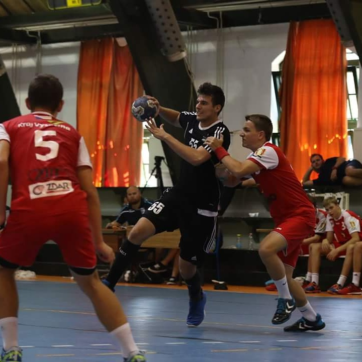
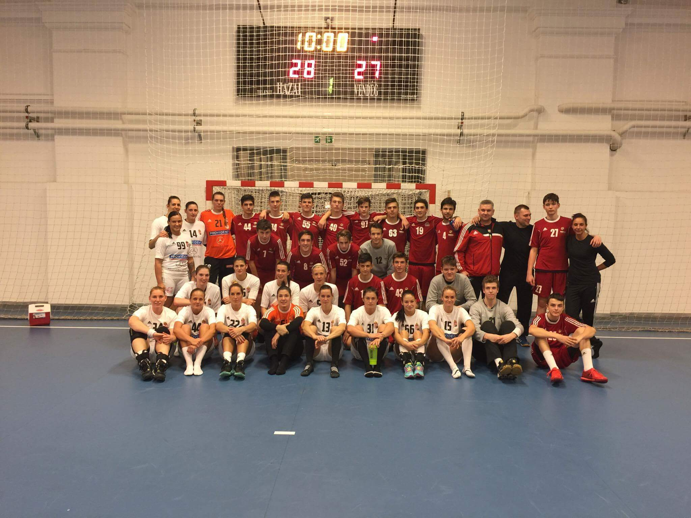

Szabó Pál - Portfólió
Kezdőlap
Rólam
Hobbi/érdeklődés
Elérhetőségek
Üdvözöllek a "Rólam" oldalon, itt kicsit bemutatom a lakóhelyemet, tanulmányaimat és az eddigi sporttevékenyégeimet.
Lakóhelyem
lehetőségek terén. Ez nálunk sincs máshogy, egy kicsi, nyugodt közösséget alkotnak a falu lakói. Legtöbben a helyi mezőgazdaségi szövetkezetben
dolgoznak, ez látható
kicsiny telepelüsénk címerében is, amit a
búzakalász jelképe képvisel. Valamint a címerben található egy templom
is, egy római
katolikus templom, ami a lakók mélyen vallásosságát jelenti.
Sokan nem
tudják még a környékbeliek közül, hogy a falunknak gyökerei szlovák ere-detűek, az itt élő idősek még a mai napig a szlovák nyelvet preferálják mikor egymással beszélgetnek. Emelett rengetek kapcsolatunk van szlovákiai
kisebb településekkel, amit az idősek vagy éppen az általános iskolások használnak ki egy-egy kirándulás alkalmával.
Tanulmányaim
Természetesen a tanulmányaimat a Kétsopronyi Általános Iskolában kezdtem, majd ezután eléggé kacifántos dolgok
következtek a tanulmányaim során. Mivel 5. osztály óta
kézilabdáztam, ezért a
sport miatt egy békési gimnáziumba tanultam tovább, ami közel sem
volt
a környék kiemelkedő iskolája. Elsős évem után kaptam egy felkérést
a Nemzeti Kézilabda Akadémiától, amiről majd a következőkben írni is
fogok. Természetesen ez egy olyan lehetőség volt, amit nem
hagyhattam ki, ezért gimnazista tanulmányaimat otthonomtól
körülbelül
350 km-re folytattam, a Mátyás Király Gimnáziumban, Fonyódon. Sajnos
a rengeteg edzés miatt, szinte magántanulói státuszban
jártunk
iskolába, ami egyértelműen meg is látszott a tanulmányi eredményeinken.
Talán emiatt is mondhatom, hogy nem vagyok egy "átlagos"
BME-s
hallgató, aki tanulmányai soron mindig 100%-ot kihozott magából. Érettségi után sajnos emiatt is kellett különórákat vennem,
hogy
felvegyenek az egyetemre. Egy év halasztás alatt talán mentálisan össze
tudtam magam szedni ahhoz, hogy sikeresen tudjam
teljesíteni a
felvételi követelményeket. Természetesen most egy sikeres félévet már
magam
mögött tudhatok az egyetemen, ami reméljük a későbbiekben
sem lesz
máshogy.
Sport
A sport
mindig is nagy értéket
képviselt az életemben,
ugyanis ahogy a fentiekben emlitettem már 5.osztály óta foglalkoztam
komolyan a kézilabdával, ha lehet ezt ilyen korban így kijelenteni.
Ebben a korban indult a karrierem a Békési FKC-nál, ahol hatalmalas
sikereket ért el csapatunk utánpótlásban. Majd a kezdeti sikerek után
pár csapattársammal bekerültünk az akkor alakuló korosztályos
válogatottba. Persze ilyenkor ez még semmi komolyat nem jelentett, hisz
mégiscsak 13-14 évesek voltunk akkoriban. Rengeteg hatalmas eredményt értünk el egy olyan kisvárosnak mint Békés.
Majd 14 évesen felkeresett Imre Vilmos, aki később az edzőm is lett, egy olyan lehetőséggel, ami azt gondolom egy kézilabdában érdekelt fiatal játékosnak mai napig visszautasíthatatlan ajánlat. Tehát másodikos gimnazistaként Balatonboglárra "költöztem", ugyanis a Nemzeti Kézilabda Akadémia csapatát erősítettem tovább. Rengeteg lehetőség tárult elénk, valamint komoly szakmai stáb segítette munkánkat. Olyan neves edzők tartottak edzéseket számunkra, mint például Gyurka János, Kovács Péter akik mind több mint százszoros felnőtt válogatottak és világválogatottak is voltak. Akadémiai utam során olyan csapatok ellen játszottunk, mint például a Grundfos Tatabánya KC, akik még most is az első osztály harmadik számú csapata. De edzőmérkőzésen voltak igen kellemes tapasztalataink is például a női Siófok KC csapata ellen vagy akár a női felnőtt válogatott ellen is. Hozzáteszem itt azt is, hogy még mindannyian bőven 18 év alatt voltunk.
Összegezve remek idők voltak az ott töltött napok, hetek, hónapok, évek. Majd 18 évesen, érettségi után "haza" igazoltam a Békéshez és immáron elég tapasztalt voltam ahhoz, hogy a felnőtt másodosztályú csapatukat erősítsem. Fél év ott töltött idő és kisebb-nagyobb sérülés után rá kellett jönnöm, hogy ez nem egy életbiztosítás és emiatt abba is hagytam ezen a szinten a kézilabdát, és elindultam a BME rögös útjain. Mai napig járok NB2-es mérkőzésekre játszani a sport szeretete miatt.
Majd 14 évesen felkeresett Imre Vilmos, aki később az edzőm is lett, egy olyan lehetőséggel, ami azt gondolom egy kézilabdában érdekelt fiatal játékosnak mai napig visszautasíthatatlan ajánlat. Tehát másodikos gimnazistaként Balatonboglárra "költöztem", ugyanis a Nemzeti Kézilabda Akadémia csapatát erősítettem tovább. Rengeteg lehetőség tárult elénk, valamint komoly szakmai stáb segítette munkánkat. Olyan neves edzők tartottak edzéseket számunkra, mint például Gyurka János, Kovács Péter akik mind több mint százszoros felnőtt válogatottak és világválogatottak is voltak. Akadémiai utam során olyan csapatok ellen játszottunk, mint például a Grundfos Tatabánya KC, akik még most is az első osztály harmadik számú csapata. De edzőmérkőzésen voltak igen kellemes tapasztalataink is például a női Siófok KC csapata ellen vagy akár a női felnőtt válogatott ellen is. Hozzáteszem itt azt is, hogy még mindannyian bőven 18 év alatt voltunk.
Összegezve remek idők voltak az ott töltött napok, hetek, hónapok, évek. Majd 18 évesen, érettségi után "haza" igazoltam a Békéshez és immáron elég tapasztalt voltam ahhoz, hogy a felnőtt másodosztályú csapatukat erősítsem. Fél év ott töltött idő és kisebb-nagyobb sérülés után rá kellett jönnöm, hogy ez nem egy életbiztosítás és emiatt abba is hagytam ezen a szinten a kézilabdát, és elindultam a BME rögös útjain. Mai napig járok NB2-es mérkőzésekre játszani a sport szeretete miatt.
Eredmények:
- U12-es Országos bajnok a Békési FKC
csapatával
- NB1/b junior bajnok Békési FKC csapatával
- Diákolimpia 1.hely a Békési
gimnáziummal
- OSB országos 2.hely a NEKA csapatával
- OSB országos 1.hely a NEKA csapatával
- 2x Országos Ifjusági Bajnokság
1.hely a NEKA csapatával
- Diákolimpia 5.hely a
Fonyódi gimniziummal